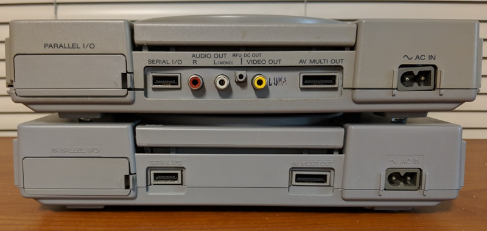
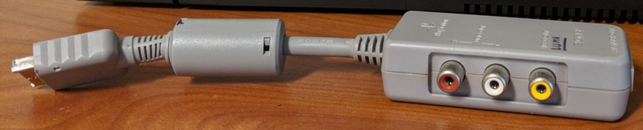
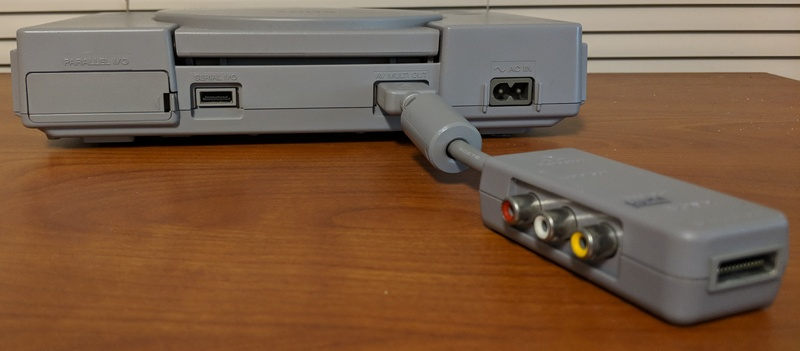

28 April 2021 [Permanent link]
Last updated: 05 March 2022 (720p video playback notes
added)
A while ago now (November 2017, at latest), I got a 1.33GHz aluminum PowerBook G4 (model A1095) from a HAM radio convention. I pretty much instantly regretted my impulsive buy (since I saw something else that I also wanted and didn't have the cash on-hand anymore), but no refunds. So I brought it home.
The following is a partial story of my journey with this machine. I've since discovered what it can do, as well as its limitations, and I'm not quite so regretful of my purchase anymore. This laptop has yielded some great learning experiences for me with respect to hardware and software, and also made me more mindful of good software design principles.
Note also that much of the stuff I am writing about was done a year or more ago, and is therefore likely to have accidental omissions, and possibly actual inaccuracies as well. I just think it's been a kind of fun project to get this thing on its feet, and that maybe other people could benefit or possibly even be entertained by the story.
First, I should acknowledge that even if their software is nice, I've never really "loved" Apple hardware the way I love my old Thinkpads or Nintendo consoles. That is mainly because I'm the kind of person who impulsively tears down every bit of kit I get within about a week of the acquisition. But Apple doesn't like people to do that. And to me, trying to scare away inquisitive people who want to know how things work is really a weird tactic for a company that supposedly needs engineers to survive. To me, a product that I'm supposed to treat as a black box is a product I don't really get to use to its fullest.
But yeah, There's a big reason I bought this powerbook. For fun! Isn't that best reason to do something? So, I was prepared for the challenges dealing with Apple products tend to incur. First, let's look at the hardware a bit.
I am still ambivalent about this 'book overall (having had to open it
up and at one point remove the entire motherboard from the chassis to
reach the power jack), but I am at the very least now convinced that
Apple in ~2004 was a very different company than it is today. There are
several things that exemplify this, but some of the most prevalent are:
Note that the dual-link DVI connector is superior to Apple's later proprietary Mini-DVI in that it supplies far higher video resolutions. Apple took a step back and downgraded to 1920x1200 @ 60hz maximum when they moved to mini-DVI. The only dongle I can imagine needing on this machine would be a passive DVI-I to VGA adapter, if connecting the laptop to a CRT or similar. These are widely available and not Apple-exclusive; I have at least three. Apple sure doesn't build them like they used to.
Some other specs of this machine include a 1280x854 TFT LCD (of pretty good quality and a nice aspect ratio), a Motorola/Freescale PowerPC 7447a CPU (7450 derivative) with the Altivec SIMD instruction set, an ATI Mobility Radeon 9700 GPU (connected via AGP; there's a hardware bug with this that I'll try to get to later in the post), and initially (I believe) 512MB of DDR SDRAM. One of the first things I did was upgrading it to 2GB of RAM (its maximum amount).
I also replaced the battery pack with an aftermarket one almost immediately, since the original Apple one was toast and my charger plug is slightly bent/messed up. If the plug comes out or twists too much, the machine will lose power, and since the battery was totally ineffective that meant instantly and abruptly turning off. My particular aftermarket battery didn't quite sit flush with the bottom of the laptop's chassis, so I put a strip of silver duct tape around the edge of it to stop the thin aluminum plate on the bottom from scraping against surfaces.
Probably the single most major issue with the Powerbook (especially if not running OS X on it) is its single-button touchpad. This can be worked around; I'll try to remember to mention it when I get to writing about running Debian Linux on it.
There's also an intermittent problem I've had with the real-time clock (and PRAM) battery, which makes me think it probably needs replacing; I'll get to that eventually, but it's not a very big deal since I can synchronize its clock with my other machines pretty easily. It uses a rechargeable Panasonic CGL3032 Li-ion coin cell soldered to a small daughterboard with tabs.
Since the original board assembly (part # 820-1686 or 820-1686-A) is apparently hard to find and often unavailable on ebay, etc., and the Panasonic coin cell in question is no longer in production, I'll probably end up ordering a similar cell I found on Digikey. Since that battery doesn't have solder tabs and I don't have equipment to weld them (risky), I'll either have to try taping it down, finding a battery clip that fits in the gap in the board, or throwing caution to the wind, sanding down the coin cell's sides (to create a rough texture), and soldering the tabs from the old battery onto it.
I've done that before with alkaline cells, although I don't like doing it at all, and I'm always afraid I'll injure myself some day doing it. I'm not sure I want to risk it with an Li-ion cell, so for now I've just resigned myself to keeping the existing battery in here until I stop being able to ignore it.
At the time I bought the machine, I think it was running OS X 10.4 (Tiger) or 10.5 (Leopard), but I only booted it into OS X once or twice on it before diving deeper. To me, at least, there's almost zero reason to run such an outdated OS X version on these macs, since the Apple ecosystem makes finding software that is still compatible with it difficult at best, and even building source code for it sounds painful due to the age of the official Apple toolchain.
Thus, I quickly decided to put Debian on it. I chose Debian primarily because it's my distro of choice on my x86 desktop and laptop, but also because it actually had an official, current 32-bit PowerPC release (Jessie) at the time that I installed it. This is no longer the case (it's not what they dub a "release architecture" due to some problems), but it's still a part of the Debian "Ports" project, so a Sid-equivalent distro installer can be found here, along with several other less-popular architectures, and a Debian 10 CD image was also apparently created for PowerPC (in an unofficial capacity) here.
Anyway, I burned a Debian installer CD-R, after unsuccessfully attempting to get it to boot off a USB. Apparently, it can be done, but I was quick to lose patience with Open Firmware and went for the install medium which I was more certain could actually work.
After the installation (successful, btw), I copied over the firmware files for the Broadcom wireless chipset (for the Linux b43 driver). The chip in my machine is a BCM4306, and the airport card is a non-standard pinout so I can't just put a better card (such as one with an atheros chip that uses the ath9k driver) in, unfortunately. This is something I could use the Cardbus slot for in the future, though.
I've done this what feels like a dozen times or more on Intel machines, and it worked exactly the same here, so if you try this and have difficulties please note that you can just look at instructions from x86 users with older wireless chipsets. I happen to know that the process is quite similar on Dell Latitude D610 laptops, for instance, and I think the D630's as well. Many, many devices used Broadcom's BCM43xx chips for wireless LAN in the mid-to-late 2000's, so there's plenty of information out there.
Update:Well, it's been about a month since I wrote the above, and I got a suitable card for dual-band 802.11n (draft) on the powerbook at a good price new old stock on eBay.
Do note that I don't believe this card has any drivers for PPC OS X, so don't get one of these if that matters to you. I think one or two manufacturers did make CardBus cards for 802.11n on Powerbooks, but I don't think those used Atheros chipsets so I didn't bother investigating further.
I specifically searched online for cards with Atheros chipsets because the "ath9k" Linux kernel driver can work with many of these chips without requiring a single binary firmware blob (so they are completely plug-n'-play under Linux, and I believe this is true under the BSD's as well). It had to not only be an Atheros card, it also had to be dual-band (not all 802.11n adapters are) and it had to be a CardBus card. I eventually settled on a card that reportedly contained an AR5416 chip – a D-Link DWA-645 rev. A2. I spent around $12 on it.
I plugged in the card, and lo and behold it "just worked" using the ath9k module. My wireless transfers to and from my other machines are now significantly faster than they were over 802.11g. My router is set up to broadcast on both 2.4GHz and ~5GHz bands in 802.11n, and I have a similar atheros upgrade done internally in my Thinkpad X201 Tablet, which also yielded quite a nice reliability improvement over the original Intel 6200/6300 802.11n card it shipped with. While I'm not quite as big of a fan of newer 802.11ac ath10k cards from them (which require firmware blobs and are from after the Qualcomm buyout), I have nothing but praise for the ath9k cards and highly recommend them for any system.
So far, the card jutting out of the side of the machine hasn't gotten in my way much; I'm quite happy with the results. Theoretically, since the drivers are totally open-source with no binary blobs, I think it'd be possible to backport the Linux kernel driver to OS X PPC, but I feel no particular motivation to do so.
Since I used a 'netinstall' cd without a network connection, my Debian install was extremely compact. It didn't even have an X server, so I installed one from a shell after getting a network connection. Unfortunately, I hit a problem when attempting to use it: it'd hang pretty quickly after starting up.
It appears that Powerbooks with ATI GPU's have had issues ever since Kernel Mode-Setting (KMS) was introduced; additionally, recent kernels no longer contained the old User Mode-Setting (UMS) code. The issue stems from a bug with the AGP implementation on the Powerbook (I think maybe it was from a bridge chip, or something). Basically, a DMA controller (Direct Memory Access controller) would misbehave and corrupt something, if I remember correctly.
There are three solutions for this problem:
Since I'm not a fan of running ancient kernels (I'd just use OS X 10.4 if I were), and I don't think I'm that much of a wizard, I opted to force the GPU to run in PCI mode.
This has to be done at boot-time. When the machine starts, there will be a Yaboot prompt, where it waits for a few seconds for you to type something and then boots up. Yaboot is basically the Open Firmware-based bootloader that Debian uses instead of GRUB by default on PowerPC. If you don't type anything (or just hit "return"), you'll see the word 'Linux' appear on the screen, followed by a couple more lines before the kernel starts showing its information.
This prompt is a place that we can add new temporary parameters, though! When prompted, type (case-sensitive, I think):
Linux radeon.agpmode=-1
…and press "return."
X should now work mostly fine, but if I remember correctly, I still suffered from occasional hanging. I was able to fix this with some more options stuffed into '/etc/xorg.conf':
Section "Device"
Identifier "Radeon"
Driver "radeon"
Option "AccelMethod" "EXA"
Option "DRI" "2" # DRI3 tends to be unstable on everything I try it on, even modern-ish Intel machines.
Option "EXAPixmaps" "on" # actually boosts performance when on, might cause instability on some machines but not mine.
Option "TearFree" "on" # I just hate tearing, so I threw this in there.
Option "EXAVsync" "on" # known to cause instability on some machines, see radeon man page. Mine seems fine.
EndSection
I am not sure if you can ever reach the same speeds as you would if AGP actually worked, but honestly it runs well enough for me to use a composited window manager (compton) and to emulate a Sega Mega Drive/Genesis (using Genesis Plus GX), so that's all I really need.
To make the change more permanent, there are multiple ways to proceed. One way that I see recommended is to add the argument to '/etc/yaboot.conf' (as an 'append=' line).
This works, but if you start throwing a bunch of arguments onto the kernel, or if you have more than one kernel you want to choose between, this becomes a bit of a hassle. So I chose a different approach:
I created a file called '/etc/modprobe.d/radeon.conf', containing these lines:
options radeon agpmode=-1 options radeonfb agpmode=-1
I think the 'radeonfb' thing is a non-sequitur (frame-buffer with AGP DMA?) but better safe than sorry, since radeonfb is basically supposed to be a failsafe mode.
I then ran these commands to make sure the changes stuck for my next boot (note that I think the 'ybin -v' was unnecessary, but it updates the yaboot configuration):
$ sudo update-initramfs -u $ sudo ybin -v
After doing that, my system has never hung in X.
I think the next thing I did (after installing an X server, since I had done a minimal offline install initially) was to make the touchpad less annoying (disable 'tap-to-click') and to make the "F*" keys send the "F*" keycodes instead of their "brightness/volume adjustment/etc." ones when pressed without holding the 'Fn' key. I found a package called 'pmac-utils' which contained the tools I was looking for. After it was installed, I added the following to the end of my '/etc/rc.local' file:
if [ -e /sbin/trackpad ]; then /sbin/trackpad notap || /bin/true fi if [ -e /sbin/fnset ]; then /sbin/fnset -u || /bin/true fi
Note that if you are using systemd as your init system, you can't run stuff at boot from 'rc.local' like I did. I'm using 'sysvinit' (System V Init) for my init system. You'll have to find your own way to run stuff at boot. A quick search suggests that this might not be too hard to do, but I have not tried it myself.
I also installed a program called 'mouseemu,' which basically can intercept keystrokes and mouse/touchpad inputs, listening for keyboard modifiers when clicking to simulate pressing other mouse buttons. I decided to configure it so that holding a 'command' key while clicking would send a right click keystroke.
This program has a side-effect of preventing buttons beyond the standard left click, right click, and middle click/scroll from working when using an external USB mouse (since it intercepts and translates input from all devices), so I also made a modified version of it that can pass through two additional mouse buttons (BTN_SIDE and BTN_EXTRA). These are the other buttons on a Microsoft Trackball Optical and are used in many mouses for navigating forward and backward in a web browser (they are mouse button ID's 8 and 9 in X). My patch is here, by the way, in case you want to add even more buttons yourself.
Mouseemu is configured on my system via /etc/default/mouseemu, which is sourced by init scripts in /etc/init.d/. I am pretty sure that the configuration is sourced the same way on a Systemd-as-init machine. To find the keycodes you need to pass to it, either find the key ID's in 'include/linux/input.h' or run 'showkey' outside of X (in a TTY; ctrl-alt-f1 for instance). Here's my personal configuration (note: pretty sure 272 is the mouse button event):
RIGHT_CLICK="-right 125 272" # command + click MID_CLICK="-middle 100 272" # fn+alt+click SCROLL="-scroll 0" # disable scroll key for now pending investigation (no idea how it works...) TYPING_BLOCK="-typing-block 0" # block mouse for 0ms after a keypress, or it interferes with playing Quake!
If you don't like the sensitivity or other things with the touchpad, and you are using mouseemu, note that any configuration changes need to target the "Mouseemu virtual mouse" device, rather than the "ADB mouse," for instance. This is because Mouseemu basically acts as a middle-man between your keyboard/mouse and X.
The PowerBook G4 seems to be pretty underpowered by today's standards in many ways; one of the most immediately recognizeable is how much it struggles to decode h.264 and render videos. It can handle 480p well enough, but chokes if you try 720p (for the screen's native resolution). At first, I thought this was the GPU's fault (on account of having to disable the DMA functionality/AGP features), but later I remembered "oh, yeah. back in the day h.264 required good hardware to decode." I'd compare it to trying to decode HEVC on my circa 2010 laptop hardware.
Additionally, mpv's codebase is regularly purged of anything "legacy," and the performance of the supported video output drivers is not great. I've always been partial to MPlayer, anyway, so I grabbed and compiled it. I discovered the best video output driver for performance to be 'Vidix.' Documentation on Vidix is quite lacking, and the code for it appears to be about twenty years old, so it was a little confusing to figure out. Basically, though, it requires direct hardware access, so mplayer needs to be run as root (either with sudo or a setuid bit). Additionally, to tell it I am using a radeon card, I put this in my ~/.mplayer/config file:
vo=xvidix:radeon
I think I had to put that under /root/.mplayer/config, actually, on account of having to run as root.
Anyway, after doing that, I still had the h.264 problem. So with my sample video ( Bubblegum Crisis, episode 5: "Moonlight Rambler"), I converted it to use almost-MPEG-4 video (xvid codec) via ffmpeg on my desktop and then moved the file over. The resulting video (using xvid for video and vorbis for audio) played back at full speed with no tearing at 720p in MPlayer!
It is possible baseline profile h.264 could have also worked, but I didn't test that. Xvid videos are so fast to encode; it's great. I hadn't used it in a long time. It's also possible that proper MPEG-4 (-vcodec mpeg4 in ffmpeg) might have worked. Xvid is technically a derivative of the draft MPEG-4 implementation as created by Microsoft in the late 90's or early 2000's, so it's approximately period correct as well.
FVWM is a very light-weight window manager that I like to use on my computers.
I discovered FVWM when I was trying to run Debian on an Android phone with an X server based on SDL. It worked when a lot of other WM's didn't want to, and I also managed to configure it to behave closer to what I expect of a "regular" window manager like Gnome/MATE or the MS Windows window manager. Reading the documentation, it quickly became clear to me that FVWM was ridiculously flexible.
Since I was able to make it do basically everything I wanted, I remembered it when I later decided to try CDE (Common Desktop Environment) on a whim over a weekend. It seemed kind of nice, but also pretty limiting. I decided that I could use FVWM to make it act like MWM (Motif Window Manager, the basis for CDE) with a few more features. And then I just sort of never looked back.
My FVWM config file is based on modifications to the FVWM 2.6 template file that shipped with Debian, but I now run FVWM 3.x (built from git). FVWM3 supports multiple monitors and rotation slightly better via RANDR - 2.6 only supports Xinerama, which is pretty much no longer in use. Other than that, up to this point, the configuration file has required only minimal alterations to work in FVWM 3.x.
One of the nicest things about FVWM is the console. You can
interactively configure things in FVWM by writing lines in a console
to test them without reloading your fvwmrc.
Anyway, not too much to say here, except that FVWM performs nicely,
and with a compositor (e.g., Compton, Picom), it also renders well.
If there's any behavior of it that you don't like, it is very likely
possible to change it (without having to recompile anything) via its
configuration file. To move to a new computer, it's as easy as copying
the ~/.fvwmrc file or ~/.fvwm directory.
To extoll more virtues of FVWM, it's easy to implement things like a "forced full-screen" mode by making a keyboard shortcut that hides the decorations and borders on the current window and then maximizes it. FVWM can also be used to make pretty much any other keyboard shortcuts one might want, whether they be for window manager actions or for launching external programs/scripts.
Anyway, I recommend FVWM not only for lightweight systems like this but for all Unix machines. It's really excellent. If you're an emacs user already, you will be quick to understand its appeal to me when you try it.
...What do you mean, you "don't use emacs?"
I'll try to come back to this and expand on it later. There's tons more stuff that I've also done. Here's an outline of topics that I think I can cover (consider it an informative teaser, of sorts):
Stay tuned!
15 May 2020 [Permanent link]
One of my long-standing hobbies (and at times mild obsessions) is
getting everything I can out of old video game hardware. Back when I
started getting interested in old video games, lots of these systems
like the NES, Super NES, and so on were relatively affordable and
cheap.
Unfortunately, however, in the last ten years or so I've been noticing prices rise. a NES game I got for $10 to $15 might be $25 or $30 now; the best example I know of in my collection is Chrono Trigger, which seems to like selling for $100 nowadays. The best example I don't own that I would like to is Earthbound for SNES. I've basically given up on finding that one; it's just proof (in my mind) that people are sometimes crazy with the value they attribute to things.
In the same way, accessories for consoles are staying pretty costly, for the most part. And a "cottage industry" has developed around providing new accessories for these old systems. For me, the most interesting (and aggravating) of these is the manufacture of RGB video cables.
There are few consoles that use a "standardized" connector for any form of video signal of higher quality than RF. Notably, the original western NES revisions can output composite video and monaural audio using RCA jacks, which it seems manufacturers since stepped back from. My only guess is that they discovered they could make more profit by selling special cables with proprietary connectors separately from the consoles themselves. Maybe this has gotten better with the advent of HDMI, but as my newest game console is (still) a Nintendo Wii, I have not bothered to check this. It seems to be the case, if vague memories of discussions with others are anything to go by.
Anyway, back to the RGB video cable issue. In the 90's, essentially nobody in North America had RGB-capable sets, and even those with 15.6KHz (TV-frequency) RGB monitors for computers (like the Amiga) most likely didn't have cables for RGB from their consoles or even know that the consoles exposed RGB video signals on their A/V connectors. For most people, S-Video was good enough on the consoles that would support it. For consoles like the Sega Genesis, which didn't offer S-Video, though… Well, they just had to make do, I guess.
Now, after a decade of (initially affordable) RGB CRT monitors from professional installations being readily available, the situation has changed. Additionally, scalers and other devices for connecting consoles to modern sets have appeared. The best quality video signal that can be had from most consoles is RGB, so there is now some demand for RGB video cables in North America. The cottage industry that's sprung up seems to be a little on the crazy side, though. All the prices below are the cheapest-priced options that could possibly work on my monitor; they are not the "optimal" or "most compatible" options that this particular business sells (it claims to be the number one option for such cables– a claim which seems very substantiated by the number of people I've talked to who have used them, at least).
That totals up to…£125.95.
Wait, £125.95!? For five wires!?
…Let me just convert that to Freedom Units really fast.
…Uh, that's $152.45. Before shipping from the UK to the US.
I never paid that much for any of my old consoles. In fact, that might be around as much as I paid for all of them combined.
In 2005, I could have purchased a brand new Nintendo DS with that money.
I could buy a more-than-decent brand new graphics card today for that much.
Or maybe even purchase a textbook for a university course.
And who even knows how long it'd take the package to get overseas and past customs! Also, if the cable ever breaks, I have to do it all over again. It's pretty frustrating to stop in the middle of an RPG (I mostly like JRPG's; I bought a Master System almost entirely for Phantasy Star and Ys).
This is worsened by the fact that all sellers seem to be fixated on the idea that I'm going to use SCART for connecting my systems, which is silly as SCART switches are expensive, practically nothing in america even uses SCART connectors (so they're hard to source), and even in Europe they're rather obsolete in 2020. So to use their cables, I additionally have to purchase a "SCART to BNC" cable to connect to the back of my monitor.
I guess most people into this stuff are probably older than me, have good paying jobs, and are further ahead in life than me as an undergraduate studying at a university. Still, those prices are a pretty huge barrier to entry for a near-minimum-wage worker in a state where the minimum wage is still $7.25. Even after I was lucky enough to get a nice RGB CRT or two by mostly luck and chance (with maybe a pinch of initiative-taking. Possibly a teensy bit of soliciting as well).
I have seven consoles that I play somewhat often. Of those, five output RGB as their highest-quality option, one outputs component video (the Wii), and one outputs composite video (my Famicom, which is modded and can output composite like an american NES can). I have four in the images above, since I already have something that I got at the same time as my Amiga 500 which obviates my problems there (a 23-pin-Amiga-RGB to VGA adapter; used with my Commodore 1942 monitor).
The Famicom and the Wii are the easiest to get top quality out of; I modded the Famicom for composite video myself and was able to re-use the existing holes in the back of the shell for composite video via RCA and dual mono audio via a TRS jack. The Wii was super easy, because I was able to get a new (third-party but decent quality) component (YPbPr) multi-system cable meant for it, the XBox 360, and the PS3 on clearance at a GameStop in around 2014 or 2015.
Most of my other consoles I drilled holes in to add RCA jacks to carry Red, Green, and Blue signals, as well as a composite sync signal. In a couple cases, I added S-Video jacks as well.
Do note that for sync on Mega Drive/Genesis systems (and Master Systems, I believe), a little work is needed if you want to use the CSync connection on the back. Without this work, the load on the CSync line will make the video outputs from the VDP chip black due to the CSync line being connected straight to the VDP (on an open-collector transistor output) instead of coming out of the encoder chip. Any direct load on the VDP like this will basically mean it is unable to produce a picture.
Note that CSync obtained like this will be +5V; most screens are fine with this, but a handful of picky ones will need a resistor to bring it down to 1 volt. Remember: this resistor will form a voltage divider with the monitor's 75-ohm resistive load when connected; you can think of it as being a 75 ohm resistor on the monitor's sync plug that connects between the signal pin and ground. To get a one volt output with 75 ohms already running between the output and ground, the resistor in series on the sync line should be 300 ohms, if I did the math correctly.
Sets requiring this resistor might also want a 220µF capacitor somewhere on the line to remove the DC bias (coupling) and turn it into a roughly one volt peak-to-peak (±0.5V) signal. The capacitor is likely not strictly necessary, but does make the signal more "standard compliant," nominally, and probably won't be a bad thing. None of my displays need either the resistor nor the capacitor, but I've heard that some scalers might. I did put the capacitor on, regardless. Since these caps are typically polarized, put it with the 'negative' (–) leg facing towards the monitor.
Okay, now that all that build-up and context has been brought into the light, I can get to the point I originally had in mind when I sat down to write this post. These things always end up way longer than I expect them to. Sorry. I start writing and just don't stop sometimes (At least that carries over into documenting my code as well; I wish it made me like writing essays for classes more, though).
On the original PlayStation, RGB out via adding RCA jacks seems harder to do at first glance, since there's a thick metal RF shielding plate which doubles as a support structure for the CD pickup mechanism. This means I can't just remove it. It also comes up really close to the plastic on the back of the console, which means I don't have space for adding any more jacks. Additionally, for all the times that I've done it, I don't actually like cutting holes in my systems if I can easily avoid it. With the PSX, I have managed to avoid cutting a single hole while staying economical and only using pre-made cables. If anything, it's actually a better solution than I have for most of my other systems, since it doesn't require any console modding and can actually be done using only American-market official Sony products, if desired. One of the two products is additionally extremely common secondhand and might still be available new. The second product is a little older and less common, but still available for pretty reasonable prices and sometimes even findable locally.
Depending on your revision of PSX, there are two easy routes you can take that both avoid having to make modifications (although I did make one small adjustment, just to improve the results ever so slightly).
There are actually a bunch of micro-revisions of the original Playstation, but for this particular post's purposes we can use a radically simplified shorthand version of it. We can do this since only one of those differences really matters here, and it's a rather blatantly obvious difference when examining a Playstation unit. Probably the first one most average people would notice. You tell me if you can spot it.
If your answer was, “The top one has seen better days,” well, you'd be right. If I can ever work up the courage to show pictures of the repair work I've done inside, you'll see that you're more right than you could possibly have known. As it is, though, I'm slightly ashamed of how it looks inside, even though I did what had to be done for it to work properly again. It definitely required an inordinate amount of time and effort to get it to 100% when compared to all of my other consoles.
In any case, that's not actually the important distinction, just another “story for another time.” Unless you are using a browser that doesn't show pictures (like Lynx), you can probably also see the lack of RCA jacks on the bottom one. That's the actual important difference here for the purposes of this post.
The sharpie'd word "LUMA" written on the console with the jacks is tangentially relevant, but since this post is already so long I'll save it for another time. It's only marginally important as an improvement to the basic idea I'm trying to communicate in an overly verbose manner, but I basically just re-routed the S-Video luma line to the yellow RCA jack for a slightly more stable sync signal than the composite signal with color information would be able to provide.
You see, very early original PlayStation units came with RCA jacks (and in Japan, even a standard S-Video connector at first). Later units removed those. Unfortunately, this removal roughly coincided with Sony's transition from a truly terrible CD drive design to a simply mediocre one.
The mediocre one was definitely much better than the original, since it had the upshot of not grinding itself out of alignment over the span of a few years. This unfortunate tendency seems to have made original units with jacks rather less common, though I suppose that could also just be because they were most expensive at launch and had less games available at first. So maybe they just didn't sell too many by comparison to the wave that was to come.
Or maybe I've just had strange luck with what units show up in stores, so my idea of the statistics are skewed.
Anyway, the unfortunate thing is that if your system has RCA jacks, and it's not been serviced at some point, it probably has one of the really unreliable drives inside and probably already struggles reading discs. Unlike the later units, where simply oiling the spindle motor is usually all they need to work perfectly, the early units basically just need to be replaced if you want them to be dependable. I did so with mine, but it requires having a drive to swap in, and usually pulling from another newer, working console.
You can also try rolling the dice on one of the newly manufactured clone drives that you can get from places like ebay and AliExpress; I've had some of those that worked perfectly and silently, and some that would cut nice rings into my CD's with their lenses. If you buy them, I suggest buying and burning cheap CD-R's with music (or games, if you have a modchip) to test the drives out before trusting them with your authentic discs.
So either your system has the RCA jacks built in and is unreliable for a lack of spare parts, or you have to buy one more thing to derive RGB from newer ones (still more affordably than those cables above). I'll explain both of these solutions now.
If you have the revision with the RCA jacks, and your CD drive is miraculously working (be it due to repairs, incredible luck, or some other form of high wizardry), then all you need to get RGB out of your playstation is a PS3 component video cable and an additional straight single RCA ↔ RCA cable.
If you want to get rid of the DC coupling on the video signals, however, you will need to do more work internally that I'm not covering in this post because I've been typing this for over two hours now. I've done it, but it is not strictly necessary and not doing so is nowhere near as bad as not removing the DC coupling from audio signals (speakers are sensitive to it, but TV's really aren't).
With that caveat in mind, all you have to do for basic RGB output is to run a wire from the yellow RCA jack to your sync input. Most screens will accept this as sync. Then the component cable's Y line goes to Green, Pb goes to Blue, and Pr goes to Red. Use three RCA-to-BNC adapters on the back of your screen, if yours uses them.
You'll need to find a “guncon” (light gun) adapter; I recommend the Sony SCPH-1160, since it's an official product and it has a fully populated AV connector that passes through everything to another “A/V Multi Out” connector on the far end. I haven't used others, so I'm not sure if they will carry all signals like this does.
It's also, coincidentally, the only official Sony product I've seen in person with a fully-populated A/V connector! Unfortunately, it seems strangely uncommon on ebay at the moment. I found mine in a local used game store for $5 or so, though, so I guess you might just have to stay vigilant. They don't seem to go over $10 or $15, even on ebay where everything with old video games seems overvalued now.
…Boy, am I going to love getting older. I can already see the bitterness starting. I'll have to keep that in check.
 My particular SCPH-1160 has had the same mod done as the 1001 has internally, where I replaced the yellow RCA jack's composite output with the S-Video luma output. I additionally connected the composite signal to the multi-out so that it can be passed through if desired. I might post pictures of that later, but I've been working on this post for a long time, so I'm not really feeling like taking it apart again right now. You don't actually have to perform any mods inside it for this to work; there's just a very slight possible improvement to sync stability that can result from it.
You can also (if you so desire) add decoupling capacitors for the RGB lines inside of an SCPH-1160, but again, it is not likely to matter for anything but audio signals which already have been decoupled inside the PSX.
So basically, you just use this 1160 dongle or similar as a breakout to give you the same RCA jacks you'd get from an early revision system. From there, you've got your sync signal, and so you can deliver the remaining R/G/B (and audio) signals through a PS3 component cable. PS3 component cables use the same pins for Y/Pb/PR as earlier systems would use for G/B/R, respectively, so this works out rather well.
{kind=link}
{kind=link}
{kind=link}
{kind=link}
{kind=link}
{kind=link}
{kind=link}
{kind=link}
{kind=link}